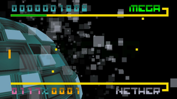

BIT.TRIP BEAT
Dieser Artikel wurde für die folgenden Ubuntu-Versionen getestet:
Ubuntu 14.04 Trusty Tahr
Zum Verständnis dieses Artikels sind folgende Seiten hilfreich:
BIT.TRIP BEAT  ist der erste Titel, einer Reihe von kommerziellen Rhythmus-Spielen, aus dem Hause Gaijin Games. Es handelt sich um eine modernisierte Version des Klassikers Pong. Man steuert das Paddel auf der linken Seite des Bildschirms auf und ab. Mit diesem spielt man die sich von rechts nähernden Punkte im Takt der Musik zurück. Der Schwierigkeitsgrad des Spiels steigt kontinuierlich an...
ist der erste Titel, einer Reihe von kommerziellen Rhythmus-Spielen, aus dem Hause Gaijin Games. Es handelt sich um eine modernisierte Version des Klassikers Pong. Man steuert das Paddel auf der linken Seite des Bildschirms auf und ab. Mit diesem spielt man die sich von rechts nähernden Punkte im Takt der Musik zurück. Der Schwierigkeitsgrad des Spiels steigt kontinuierlich an...
Die Steuerung über einen Controller ist möglich. Es wird jedoch die Steuerung per Maus empfohlen.
Der vierte Titel BIT.TRIP RUNNER ist ebenfalls unter Linux erschienen.
|  | |
| Menü | Spielszene |
Installation¶
Vorbereitung¶
Für die Installation des Spiel ist es notwendig
libopenal1
 mit apturl
mit apturl
Paketliste zum Kopieren:
sudo apt-get install libopenal1
sudo aptitude install libopenal1
zu installieren [1].
The Humble Android Bundle #3¶
Das zur Rechnerarchitektur passende .deb-Paket aus der Aktion The Humble Android Bundle #3 herunterladen und installieren [2].
Das Spiel kann über "Spiele -> BIT.TRIP BEAT" gestartet werden.
Ubuntu Software-Center¶
BIT.TRIP BEAT kann über das Software-Center käuflich erworben werden. Dazu ist eine Registrierung bzw. ein Zugang über Ubuntu One erforderlich, welchen man sich aber auch während des Zahlungsprozesses über das Software-Center anlegen kann. Anschließend wird das Spiel automatisch heruntergeladen und installiert. Für zukünftige Updates wird eine neue Paketquelle hinzugefügt.

Infobox¶
| BIT.TRIP BEAT | |
| Genre: | Arcade |
| Sprache: | |
| Veröffentlichung: | 2012 |
| Entwickler: | Gaijin Games Inc. |
| Systemvoraussetzungen: | 2.0+ GHz Prozessor / 512 MB RAM / 128 MB Grafikkarte |
| Medien: | Download |
| Strichcode / EAN / GTIN: | - |
| Läuft mit: | nativ |

- Erstellt mit Inyoka
-
 2004 – 2017 ubuntuusers.de • Einige Rechte vorbehalten
2004 – 2017 ubuntuusers.de • Einige Rechte vorbehalten
Lizenz • Kontakt • Datenschutz • Impressum • Serverstatus -
Serverhousing gespendet von